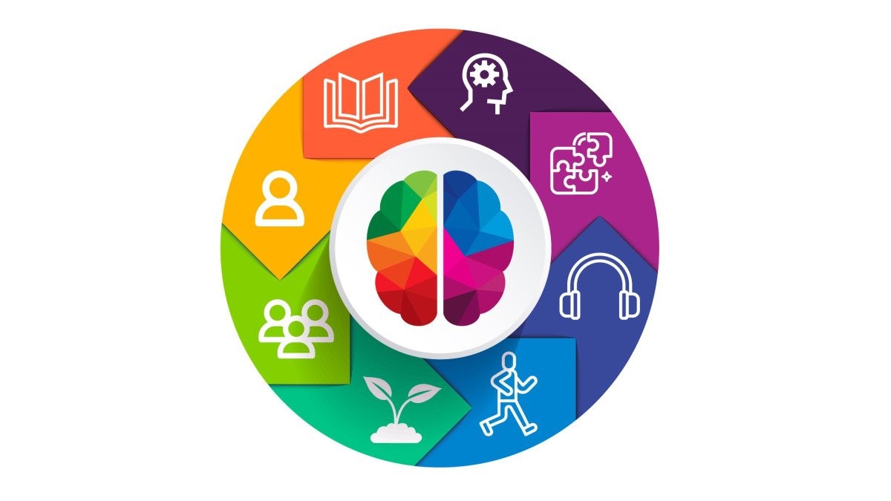

La teoria de las inteligencias multiples, propuesta por Howard Gardner, indica que cada persona tiene diferentes habilidades que pueden desarrollarse de manera unica segun su entorno y experiencias de aprendizaje.

| Tipo de Inteligencia | Descripcion | Ejemplo de Profesion |
|---|---|---|
| Linguistica | Uso efectivo del lenguaje. | Escritor, periodista |
| Logico-Matematica | Analisis y resolucion de problemas. | Ingeniero, cientifico |
| Espacial | Pensar en imagenes y formas. | Arquitecto, disenador |
| Musical | Habilidad para ritmos y sonidos. | Musico, compositor |
| Corporal-Kinestesica | Control del cuerpo para crear o actuar. | Atleta, bailarín, actor |
| Intrapersonal | Comprenderse a uno mismo. | Filosofo, psicologo |
| Interpersonal | Entender a otras personas. | Maestro, lider |
| Naturalista | Relacion con el entorno natural. | Biologo, agricultor |